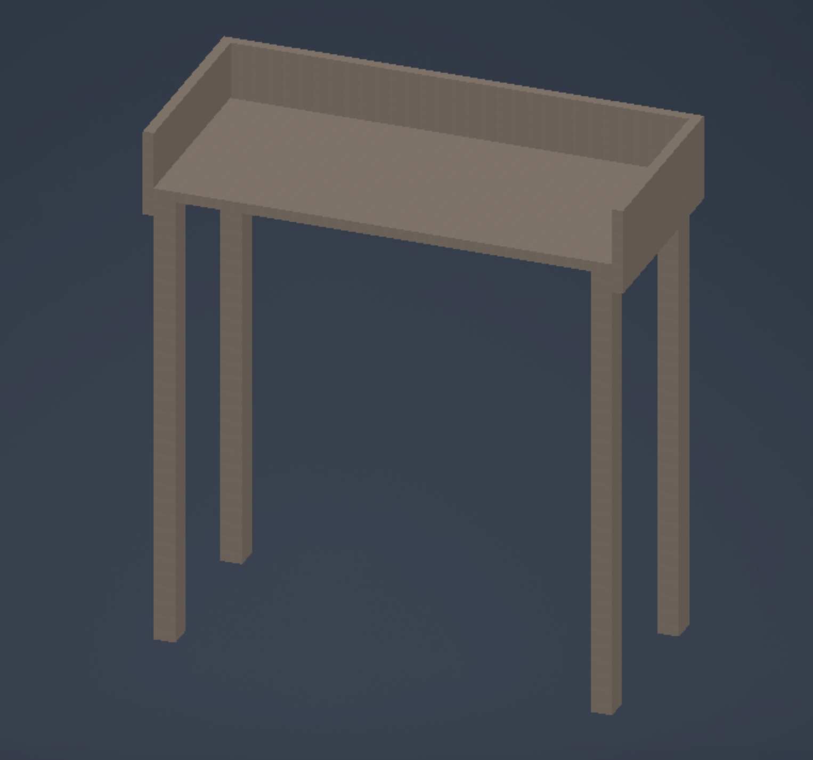
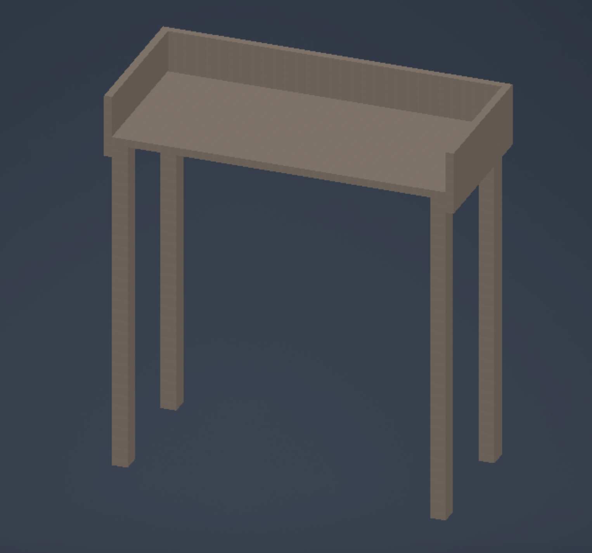

Lokaverkefni
VERKEFNI 4 Í TÖLVUSTUDDRI FRAMLEIÐSLU
Lýsing á verkefni
Lokaverkefnið í Tölvustuddri framleiðslu var tvíþætt. Fyrst var að hanna og búa til eitthvað heildstætt verkefni með því að innvinkla eina af tveimur aðferðum hér að neðan. Í boði er að nota geislaskera eða 3D prentun til að bæta við íhlutum við verkefnið. Við áttum að velja eitt af þessu hér að neðan:
1. Hannið, teiknið, undirbúið og fræsið eitthvað með Shop Bot. Skipuleggið og skrá setjið feeds og speeds, toolpaths ofl fyrir það sem var hannað. Skrásetjið framkvæmdina og afraksturinn á sameiginlegt vefsvæði. Í boði verða 1500x1500mm af 18mm krossvið. (verður uppfært seinna með nánari upplýsingum). T.d. innréttingu, húsgagn, vegglist, grind.
2. Hannið, teiknið, undirbúið og fræsið mót í vax. Undirbúið toolpaths, bæði roughing og finishing. Skrás etjið framkvæmdina og afraksturinn á sameiginlegt vefsvæði. Lesið MSDS og skipuleggið út frá þeim ef þörf þykir. Í boði verður 15x7x4cm vax ásamt sílikoni til mótagerðar og epoxy resin (eða sambærilegt). (verður uppfært seinna með nánari upplýsingum). T.d. íhluti, leikfang, ílát, upphengt á vegg.
Svo átti að skrá ítarlega sitt vinnuframlag fyrir þá verkþætti sem maður var ábyrgur fyrir á sína persónulegu vefsíðu. Einnig átti að klára eftirfarandi þætti: Búið til tillögu að lokaverkefni. Skrásetjið á sameiginlegt vefsvæði hönnunarþætti, framkvæmd, verkefnastjórnun og skipulag, samsetningu ofl. Hönnunarskjöl þurfa að vera tiltæk með hlekk. Notið aðferðafræði verkefnastjórnunar til að skipuleggja vörður, skipta með ykkur ábyrgð og ákveða tímaramma hvenær hvaða verkþáttur er framkvæmdur. Ákveðið hönnunarvernd fyrir verkefnið ykkar og útskýrið á vefsvæði. Búið til einblöðung um verkefnið. Búið til 2m kynningarmyndband um verkefnið og setjið á síðuna.
Undirbúningsvinna og markmið
Markmið lokaverkefnisins í Tölvustuddri framleiðslu var að hanna, teikna og undirbúa eitthvað heildstætt verkefni sem átti að fræsa með Shop Bot. Við byrjuðum á hugmyndavinnu sem skilaði sér í að við ákváðum að hanna og fræsa út minibar. (Kemur eflaust ekki óvart þar sem við erum jú í háskóla.) Fyrst var hugmyndin sú að hafa hann á gólfinu og byrjuðum við því að teikna hann þannig. Fljótlega kom þó í ljós að hann var engan veginn nógu flottur og var því farið aftur í hugmyndavinnu sem skilaði sér loks í lokaniðurstöðu. Hún var að hafa hann upp á vegg og sáum við flottar hugmyndir af upp á hengdum minibar á netinu. Við fórum þó okkar leið og stækkuðum og breyttum þeim hugmyndum sem okkur leist best á, enda er aldrei hægt að eiga til of mikið af áfengi.
Að teikna hlutinn í Inventor
Fyrsta hönnun á minibarnum
Við byrjuðum á því að teikna börðplotu og skúffu til að renna henni í og þetta var svo sett saman í assembly eins og sjá má á myndunum hér að neðan.


Síðan var að teikna fæturna. Planið er að líma tvo saman til að hafa þá þykkri. Fæturnir voru hannaðir og teiknaðir þannig upp. Til þess að auka styrk, þá voru þeir hannaðir þannig að tvær útskornar spítur yrðu límdar saman. Það var rætt um þá hugmynd að hanna fæturnar þannig að þeir yrðu púslaðir saman en ákveðið var að líma þá frekar þar sem ekki var talið að borðið yrði nógu stöðugt til þess að halda uppi miklum þunga. Fæturninr verða svo skrúfaðir í og til þess að borðið verði nógu sterkt þá var ákveðið að láta fæturnar vera skrúfaða í hliðarplöturnar. Þá var einungis eftir að teikna hillurnar sem koma í en þær verða tvær í heildina.
 

Hönnuð var hilla sem á að festast við fæturnar með skrúfum til þess að auka styrk enn fremur.
Hillurnar voru settar í assembly-ið og staðsetning ákveðin. Við bættum svo við aðeins meiri stuðningi eins hægt er að sjá hér að neðan.
Hönnað var plata sem á að festast við bakhliðina en hún á að veita enn meiri stuðning. Þær verða á bæði efri og neðri hillu.
Við prófuðum að setja þetta upp í inkscape til þess að sjá hvort að þetta myndi passa á 1500x1500 plötu. Þetta virðist passa nokkuð vel.
Ný hönnun á minibarnum
Við sáum fljótt að þessi hönnun var ekki að fara að virka, okkur fannst hún ekki nógu flott og við vildum sjá eitthvað mikið flottara. Þá fórum við í hugmyndarvinnu og fengum hugmynd um að hafa hann festan upp á vegg. Þegar sú hugmynd var kominn fóru hlutirninr að ganga vel og fengum við góðar hugmyndir ásamt góðum hugmyndum á netinu en við útfærðum þær á okkar hátt og erum mun spenntari fyrir þessari hugmynd.
Fundin var hönnun af minibar á netinu sem ákveðið var að líkja eftir, hana er hægt að sjá hér. En þar sem við erum nú í háskóla, þá þurfum við að hafa tvær hillur til að rúma áfengið. Allir partarnir voru teiknaðir í Inventor og settir saman í assembly. Byrjað var að mæla hversu stór mínibarinn átti að vera og öll skilyrðin voru skrifuð niður. Skilyrðin voru meðal annars að allir hlutirnir(glös og flöskur) sem hillan átti að halda myndum rúmast vel og að það væri frekar nóg pláss en of lítið pláss. Teiknaðar voru 8 einfalldar plötur í Inventor og minibarinn settur saman. Síðan var skorið út mynstur til þess að halda glösunum uppi og skorið eina hillu þvert í tvennt til þess að búa til auka hæð.
Svona koma hugmyndin svo út:
Ákveðið var að breyta hönnuninni á flöskuhillunni þannig að 6 hringir eru skornir út á efri hillunni og þá munu fremri flöskurnar fara ofan í hringina og þar að leiðandi detta þær ekki framm af. Einnig styðja þeir við aftari flöskurnar. Ákveðið var svo að skrúfa hilluna saman og festa hana á vegginn með vinklum.
Útlínur af plötunum voru svo settar í inkscape til þess að gá hvort þetta kæmist ekki fyrir á 1500x1500mm plötunni, eins og hægt er að sjá hér að neðan þá passaði þetta vel.
Ákveðið var síðan af hafa led-borða eftir hillunum og því var skorin út rák til þess að rúma borðann. Led-borðinn á að vera í álprófil. Hann var fundinn á netinu og var gerð rák til þess að hann myndi passa í. Hægt er að sjá hann hér að neðan.
Áhyggjur spruttu upp um hvort að hillurnar myndu þola vægið með þessari rákir, þannig að gerð var einföld og snögg burðarþolsgreining í Inventor til þess að kanna það. Þetta lítur vel út og virðist haldast vel.
Ákveðið var að skera einnig út rák fyrir rafmagnssnúruna fyrir ledborðann til þess að fela hana. Hægt verður síðan að spassla yfir rákina og málað hilluna. Þá endar rafmagnssnúran vel falin innan í hillunni.
Að færa úr Inventor yfir í sjálfan skurðinn + Toolpaths
Smíðateikningarnar voru færðar yfir í Fusion 360, þar sem ákveðið var að nota Fusion 360 til þess að velja toolpaths. Hillurnar voru settar í næga fjarlægð frá hvor annarri þannig að bitinn myndi ekki óvart rekast í þær. Valin var upphafspunktur fyrir hnitakerfið fyrir fræsinn, þar sem passað var að Z-ásinn myndi snúa upp. Allir hlutirnir voru valdir í módel.
Valið var að skera útlínurnar með 2D Contour og grúfurnar voru gerðar með 2D pocket.
Bitinn sem var í fræsinum var fundinn og valinn.
Völdum maximum rough stepdown sem 3mm.
Við áttum erfitt með að finna út úr öllum stillingum og hvernig átti að gera toolpath í Fusion 360, þar sem að enginn af okkur hefur komið í snertingu við þetta áður þannig að við fengum kennarann til þess að hjálpa okkur með alla uppsettingu og stillingar.
Skurðurinn
Það gekk ekki alveg nógu vel að fræsa út minibarinn þar sem krossviðurinn var ekki alveg jafn, heldur var sveigja í plötunni sem varð til þess að hann fór ekki rétt í gegn á öllum stöðum. Bæði fór hann of langt 11 mm í stað 8 mm og eins of stutt eða einungis 3 mm í stað 6 mm. Þetta varð líka til þess að við þurfum að saga út meiri hlutann af hillunum. Þetta skilaði sér í miklu meiri vinnu og sem verst var að krossviðurinn á það til að brotna upp og lentum við í að hillurnar komu ekki nógu vel út og þarf því bæði að pússa þær vel niður og eins að fylla upp í brot hér og þar. Þetta gekk þó allt saman nokkuð vel og var fræsirinn um klukkutíma að fræsa allt út. Næst væri betra að huga að því hvernig plötunni er snúið áður en hún er skrúfuð niður og eins að reyna að skrúfa eins fljótlega niður auka skrúfum í kringum miðju plötunar eða að minnsta kosti eins nálægt miðju og hægt er til að fá jafnari skurð.
Á myndinni að neðan sjáum við hvernig þetta kom út úr fræsinum.
Á myndinni að neðan sjáum við bakhliðina af plötunni og þar má sjá að fræsirinn náði ekki í gegnum plötuna allstaðar þannig að við þurftum að skera út restina með handsög.
Samsetning Minibars
Þar sem að lokaprófstímabilið er nú byrjað þá á minibarinn eftir að vera settur saman og hengdur upp á vegg. Það verður ekki fyrr en eftir lokaprófin. Það sem á eftir að gera er að finna og kaupa góða vinkla og hillufestingar til þess að halda uppi hillunum. Á myndunum hér að neðan koma dæmi um sterkar hillufestingar sem hægt væri að nota til að halda uppi þyngstu hillunum. Þær eiga þá að halda uppi mestu þyngdinni, síðan eru aðrar plötur skrúfaðar saman. Þar verður notað litla og netta vinkla til að halda uppi plötunum sem þurfa ekki bera eins mikla þyngd. Einnig á eftir að ákveða hvort að hillan verður máluð og þá í hvaða lit hún á að vera. Svo þarf að finna spassl til að lagfæra þá kantana sem brotnaði upp úr. Eftir það er eru hillurnar tilbúnar og hægt verður að setja þær samana og festa upp á vegg. Svo er ekkert eftir nema að troðfylla minibarinn af áfengi og glösum og halda partý.
Niðurstöður og lokaorð
Þetta verkefni gekk ótrúlega vel, fyrir utan að fræsirinn fór ekki nógu vel í gegnum plötuna, sem varð til þess að við þurfum að saga allt út. Það var engu síður virkilega áhugavert að læra á og að nota þennan stóra fræsi. Fræsingin var frekar áhugaverð og gæti komið sér vel í framtíðinni að kunna á þessa tækni og geta farið frá hugmynd af húsgagni yfir í teikningu og þaðan í að fræsa hlutinn út og setja saman. Enda svo á að vera kominn með glænýtt húsgagn inn í stofu hjá þér. Þetta er framtíðinn eins og 3D prentunin. Fólk á eftir að nýta sér þetta meira og meira. Það sem væri gaman og áhugavert að prófa næst væri að flækja hönnunina aðeins meira og sameina til dæmis fræsingu og 3D prentun eða hlut úr móti eins og foosball þar sem borðið er úr fræsinum og karlarnir úr mótum eða 3D prentaðir en við göngum sáttir frá borði og erum allir búnir að læra helling á þessu námskeiði og sem meira var að þetta var hrikalega skemmtilegt og nothæft allt sem við gerðum og lærðum. Hér fyrir neðan má sjá hilluna eftir skurð og hvernig hún mun líta út samsett.
Þetta er lokaafurðin (í bili).
Kynningarmyndband
Hér fyrir neðan má sjá kynningarmyndband af lokaverkefninu okkar:
Kynningarmyndband.Einblöðungur
Hér fyrir neðan má sjá einblöðung af lokaverkefninu okkar:
Hönnunarvernd
Við skoðuðum hönnunarvernd fyrir lokaverkefnið okkar og fundum út að hönnun samkvæmt lögum þessum merkir útlit og gerð vöru eða skreytingu hennar í tví- eða þrívídd. Lögin taka ekki til hönnunar þegar aðeins er af tæknilegum ástæðum völ á einum möguleika varðandi útlit eða gerð vöru. Hönnuður eða sá sem sækir rétt sinn til hans getur samkvæmt lögunum öðlast einkarétt til hönnunar sem hagnýtt verður í atvinnulífi. Finna má þau lög sem fjalla um hönnunarvernd inn á heimasíðu Alþingis. Hönnunarskráning verndar útlit vöru eða hluta af vöru, þ.e. lögun, liti, mynstur o.fl. Hönnun þarf að vera ný og ólík því sem til er þegar sótt er um skráningu en það skiptir þó máli á hvaða sviði hönnunin er hvernig þetta er metið. Ef hönnunin er t.d. dekkjamynstur er svigrúmið sem hönnuðurinn hefur lítið en mikið ef varan hefur ekki verið til áður. Hönnun getur verið stök vara, hluti af vöru eða vörulína. Það sem skiptir máli ef sótt er um vernd er að myndirnar séu skýrar og sýni hönnunina vel. Meira er hægt að lesa um þetta inn á heimasíðu Hugverks. Hönnunarvernd í hnotskurn: 1.Verndar útlit vöru en ekki virkni hennar. 2.Einkaréttur til að nýta hönnun og banna öðrum það. 3.Hægt að framselja hönnun eða leyfa öðrum að nýta hana. 4.Getur gilt í allt að 25 ár. 5.Gildir aðeins á Íslandi en hægt að sækja um erlendis líka.
Við höfum hafið ferli í að fá hönnunarvernd fyrir lokaverkefnið okkar og mun það koma betur í ljós seinna hvernig það mun ganga.
Verkefnastjórnun
Í svona hópverkefni er mikilvægt að hafa gott skipulag og kemur þá forrit eins og Trello sér vel. Það hjálpaði okkur mikið og sá til þess að við vorum nær áætlun en ef við hefðum ekki sett upp verkefnið í Trello og sett upp þá verkþætti sem þurfti að klára fyrir ákveðna skiladaga/tíma. Við reyndum þó að halda öllu einföldu og flækja ekki ferlið óþarflega mikið með því að búta/skipta því of mikið niður. Eins vildum við vinna það eins mikið saman og við gátum, því ákváðum við að hittast frekar meira og vinna saman en að vinna það einir á sitt hvorum staðnum. Við mælum klárlega með því, því ekki einungis unnum við hraðar saman heldur komum við upp miklu flæði og hugmyndirnar byrjuðu að dælast inn/fljúga. Fyrir utan að það er mikið skemmtilegra að vera saman að vinna í svona verkefni.
Tímaskráning
Það fór talsverður tími í að klára þetta verkefni en hér er tímaskráningin:
2 klst í verkefnaskiptingu.
3 klst í hugmyndavinnu.
2 klst í FabLab að læra á búnaðinn, læra betur á Inventor og að kynna okkur verkefnið.
8 klst í FabLab að teikna upp hlutinn, gera hann klárann og þess háttar.
3 klst í að færa teikningu yfir í Fusion 360 og gera tilbúna fyrir skurðinn(Toolpaths)
1,5 klst í sjálfan skurðinn.
1,5 klst að saga út hillur og frágang eftir skurð.
8 klst í skýrslugerð (fyrir vefsíðu).
6 klst í að aðlaga vefsíðuna að verkefninu.
2 klst í vinnu í kringum hugverkaréttinn.
3 klst í að kynna okkur og gera myndband.
3 klst í að gera einblöðung.
Samtals um 43 tímar með flest öllu.
AÐLÖGUN VEFSÍÐUNAR AÐ LOKAVERKEFNINU
Það var ekki mikið nýtt sem var gert í þetta sinn. Sömu aðgerðir voru notaðar og í verkefni 1. Einungis texti, myndir og myndbönd voru notuð og það er allt frekar auðvelt í framkvæmd, þar að segja sérstaklega eftir verkefni 1. Því þetta er mest megnis að nota það sama og í fyrsta verkefninu. Hér fyrir neðan er kóðinn sem ég nota til að setja inn myndir, video og módel.

Framtíðar ENDURBÆTUR Á VEFSÍÐU
Á eftir að koma í ljós hvað þarf að laga ef það þarf yfir höfuð
Hönnunarskjöl